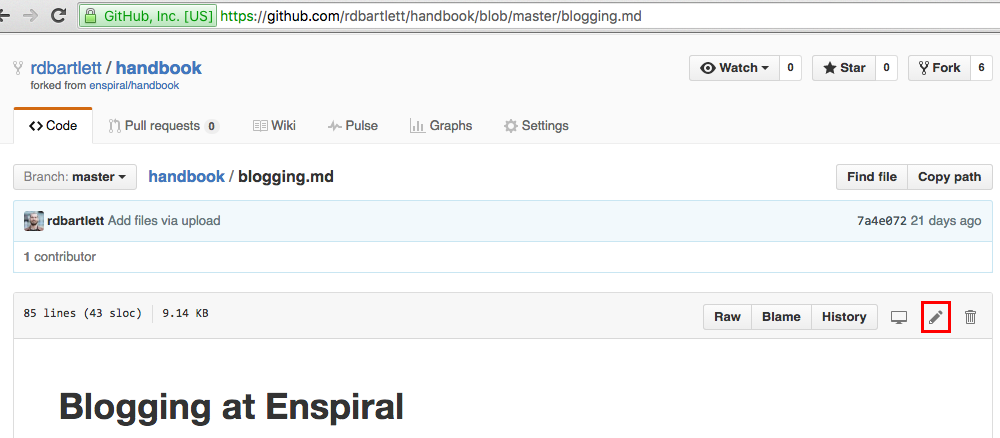
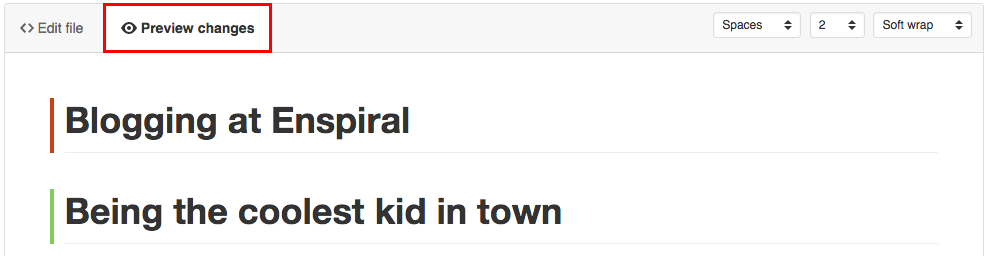
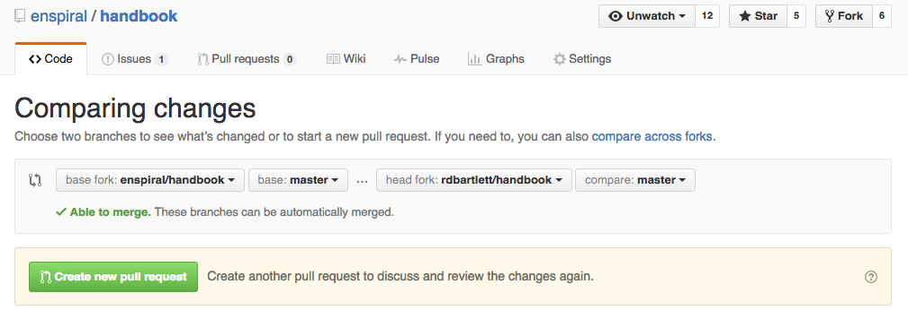

Contributing to the handbook
The Github Method
Github is a platform that is mostly used by developers to manage software projects: it allows many contributors to all work on a single project without stepping on each other's toes. It has a system for storing files and proposing changes to them in a managed way. (This is based on an amazing free technology called git.)
All the files that make up this handbook live in a Github "repository" (often called a "repo") : https://github.com/enspiral/handbook
Check the Github for Beginners guide if you want to learn more.
If you have a Github account, you can draft another version of the handbook and let people comment on your draft. You make a "pull request" to request that repo maintainers merge your changes into the canonical version of the handbook, the "master" version. If you don't have an account click here to set one up. Once you have an account, post your github user ID in the #enspiral_help channel in Slack and ask for someone to add you to Enspiral' github account.
To change an agreement you need to follow the process outlined in the decisions agreement. These agreements govern our community so they can only be changed with community input.
If you're making a small edit like fixing a typo, or adding a guide, the pull request is a good place to start.
Here's how to propose a change:
Watch the quick demo video, or read on:
Step 1
First, go to the enspiral/handbook Github repo (you'll need to be a logged Github user). Click "Fork" to make your own copy of the repo. It'll ask for a destination: just select your personal account.

Step 2
Now you're on your own version of the handbook. You can add files with "Create new file" or "Upload files". To edit an existing file, select it from the list, then click the little pencil icon near the top right.

Step 3
Now you're in a file editor, so you can make any changes you want. We're using markdown to add formatting, links, images, etc. You can see how this markdown formatting will render by clicking "Preview changes". Text outlined in red is the stuff you're proposing to remove, and green means you're proposing an addition. Hit "Commit changes" to finish editing.

Step 4
Once you've added and edited all the files required to make a useful change to the handbook, go back to your repo (click yourGithubUsername/handbook at the top of the page) and click "New pull request".

Step 5
This will take you to the enspiral/handbook repo, and give you a preview of the whole set of changes you are proposing. If it looks right, then click "Create pull request" and fill in a title and details for the pull request, so people know at a glance what is included. Finally, you need to click "Create pull request" once more, which will make your proposal final and notify the repo maintainers that you want to make a change.

Handbook Maintainers
Handbook maintainers aim to merge pull requests within 1-2 days. As a general guideline a maintainer does not merge in their own branches or pull requests. If they cannot get hold of another maintainer they may merge their own branches.
To improve communications and understanding, its useful for your proposed changes to reference an underlying issue that your changes aim to solve.
If you want to become a maintainer ask @joshuavial to give to maintainer rights.
Improvements and Disagreements
If you think the content in the handbook is inaccurate or could be improved follow the process above to submit your own changes. The contribution process may reveal differences of opinion. In these cases, try to understand each others perspective. Consider starting a Loomio discussion to find agreement.
The Gitbooks Method
You can also edit the handbook using the Gitbooks Editor. If you know how to do that, why don't you go ahead and update this page to explain it to someone else :)
Updating the Table of Contents/Menu
You can update the menu by editing the SUMMARY.md file.
Previewing changes before merging a pull request
Gitbook automatically renders all branches on Github, so you can preview what a pull request will look like before merging it.
To do this, go to the Activity tab -> switch branch -> view latest build -> read online.

If you can see room for improvement, please feel free to edit this page. Find out how.